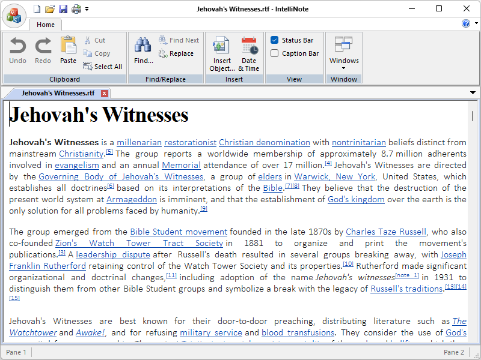

IntelliNote is a free (as in “free speech” and also as in “free beer”) RichTextFile editor. Running in the Microsoft Windows environment, its use is governed by GNU General Public License v3.0. IntelliNote is written in C++ and uses pure Win32 API and STL which ensures a higher execution speed and smaller program size. By optimizing as many routines as possible without losing user friendliness, IntelliNote is trying to reduce the world carbon dioxide emissions. When using less CPU power, the PC can throttle down and reduce power consumption, resulting in a greener environment. I hope you enjoy IntelliNote as much as I enjoy coding it!
A client-server application is a program that runs on the client-side while accessing the information over a remote server. The client-server always makes requests to the remote server by calling functions of the server to retrieve information. The client program and the server program may run on different systems and on different platforms where they require a communications layer known as middleware.
The client-server application might run on a network client or a network server. The applications are solely described on their architecture except for the fact that how it is deployed on the network. It uses a two-tier architecture that has two users; the client and the server.
The server machine acts as a host that can run single or multiple server programs that share their resources with the clients. Sometimes the server gets overloaded when simultaneous requests are received from the client.
The communication between the client and server is a two-way street. Servers can reach the client to make sure that the client has appropriate updates, patches, or if there are any other requirements. Once the inquiry is done, the server closes the connection to the client so that the bandwidth space and the network are conserved.
Some of the typical features of client-server applications are as follows:
The installer will likely require Administrative privileges in order to install IntelliNote (and later, to update IntelliNote or install or update plugins, or anything else that requires writing to the installation directory). If you do not have Administrative privileges, you either need to tell the installer to use a location where you do have write permission (though that may still ask for Administrator privileges), or you may choose not use the installer and instead run a portable edition from a directory where you have write permission.
These instructions will allow you to run a portable or mini-portable (also called “minimalist”), without requiring administrative privileges.
The portable zip edition of IntelliNote can be removed by deleting the directory they came in. If you manually set up file associations or context-menu entries in the OS, it is your responsibility to remove them yourself.
This roadmap outlines where IntelliNote is heading. It brings together the next steps for the features that are already there, ideas for new ones, and the maintenance work that goes into every release. Items are grouped by horizon rather than by date, and their order may change as feedback arrives or as the libraries IntelliNote builds on evolve, so please treat it as a statement of intent, not a promise. For everything that has already shipped, see the Release Notes.
Last reviewed: November 2026 (version 0.01 in development).
.rtf file association (including an Open with IntelliNote command in Windows Explorer) and the reopening of the saved notes that were open at the last close. It is meant for evaluation and early feedback, so it is not production-ready yet..rtf association and the Open with IntelliNote command. The Options button of the caption bar only customizes the ribbon.Want to see something sooner, or have an idea that is not listed here? Open an issue or start a conversation in Discussions. Contributions are welcome as well: any item above can be picked up through a pull request, as described in the next section. For enhancements, the issue must be approved by a project administrator (it will carry the Accepted label) before the pull request can be merged, so it is best to open the issue before you start coding.
As noted in the Contributing Rules for IntelliNote, all Pull Requests need to be attached to a issue on GitHub. So the first step is to create an issue which requests that the functionality be improved (if it was already there) or added (if it was not yet there); in your issue, be sure to explain that you have the functionality definition ready, and will be submitting a Pull Request. The second step is to use the GitHub interface to create the Pull Request from your fork into the main repository. The final step is to wait for and respond to feedback from the developers as needed, until such time as your PR is accepted or rejected.